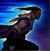

Explore this page to learn more about using Lucian's abiilites.
Passive - lightslinger
After casting an ability, Lucian's next auto-attack will be a double shot: one from each of his pistols
Q - Piercing Light
Cast on a target within Lucian's auto attack-range, he fires a bolt of light which pierces his target and hits those a short distance behind it
W - Ardent Blaze
After a brief channel, Lucian fires a cross shaped projectile that expands at the end of its range. Enemies hit by this are marked with light and if Lucian attacks
an enemy marked with light he will momentarily gain a small amount of movement speed (Great for kiting)
E - Relentless pursuit
Lucian dashes towards the cursor upon activation of Relentless Pursuit. The cooldown of this ability is lowered by 2 seconds for
every shot of his double shot landed whilst this ability is on cooldown

R - The Culling
Lucian fully unleashes his weapons, firing continously in a straight line, damaging the first target hit in his extended range. His direction of attack is fixed whilst
channeling this ability